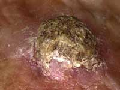
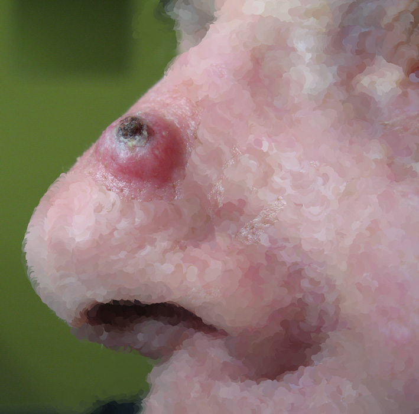
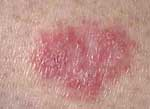
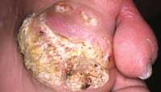
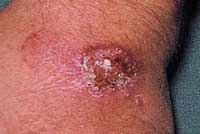
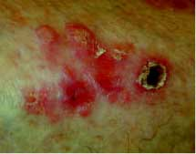
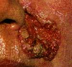
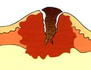
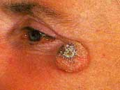

2nd most common skin malignancy. Age
Peak incidence 40-80 years.
Increasing in young due to childhood sun over-exposure. Sex
M>F; occupational. Geography
Predominantly Caucasians.
Risk Factors Environmental:
Exposure to UVB is central.
- more exposure = more SCC
Carcinogens (cigarette smoke, pesticides, radiation).
Chronic irritants.
Personal
Fair hair, fair skin, blue eyes.
Precursors: SCCs arise in an area that have had premalignant change.
- precursors are solar (actinic) keratosis, Bowen's disease (in situ
SCC); see below. - may occur in scars (Marjolin's Ulcer; see below).
Comorbidities:
Past hx of skin cancers.
HPV for mucocutaneous surfaces.
Xeroderma pigmentosum, albinism.
Immunosuppression after kidney transplants may lead to multiple /
confluent SCCs (perhaps virally-related):
ACTINIC KERATOSIS
Aka senile / solar keratoses.
Arise from sun damaged skin.
- mostly elderly men who ignore them.
- often on hands / face and helix of ears.
Are Premalignant
- 6-10% lifetime SCC risk
- watch for any change in size or appearance.
Areas of epidermal dysplasia usually on sun-exposed fair skin.
Give rise to painless cutaneous scaling.
- raised plaque of skin with keritonous layer.
- should be confined to skin; if tethered suspect invasive SCC
- local lymph should not be enlarged.
Must rule out SCC
Remove then with liquid nitrogen / diathermy preceded by curettage
(more scarring with diathermy).
- multiple lesions treated with 5FU cream; not radiotherapy.
- further sun protection essential.

KERATOACANTHOMA
Similar in appearance to SCC
But rapid growth for 1-2m then involution for 1-2 months
Treated by excision biopsy
- must rule out SCC

BOWEN DISEASE
Intraepidermal SCC (SCC in situ)
Premalignant (3-5% transform)
Frequent in elderly.
Persistent, progressive, usually flat, scale / crusted plaque.
- often flat pink papular pactures covered in crusts.
- often mistaken for eczema

- when crusts removed, oozy bloody papilliferous surface.
Rule out invasion.
If diagnosis uncertain, biopsy & lack of response to steroid may
help.
Excision is best
- recurrence if not taken deep enough or skin appendage structures
involved.
- radiotherapy has to be full tumour doses.
- chemo with 5FU may be effective if very large or field change.
- cryotherapy / curettage & cautery often undertaken instead.
MARJOLIN'S ULCER
SCC arising in a longstanding ulcer or scar.
- commonest in a venous ulcer or a burns scar.
Similar to other SCC, but not usually so florid.
Edge not always raised; may be subtle & masked.
View unusual nodules / changes in a chronic lesion with suspicion
- particularly if enlarging / discharging foul matter.
Lymph is usually involved late as local drainage damaged in scar.
Invade locally but rarely metastasise
More commonly on palm and soles - 'carcinoma ciniculatum'.

SCC
Pathogenesis Role of UV radiation UVB thought to cause
most SCCs
i) Direct carcinogenesis
- keratinocytes in the basilar layer affected.
- tumor promotion & growth result from unrepaired mutations.
ii) Depression of cutaneous
immune surveillance
- inhibition of tumor rejection.
- p53 tumor suppressor genes mutated in >90% of SCCs.
Natural History
Routinely begin as solar keratoses (see below)
- best differentiated by feeling the lesion; base has concerning
thickness to palpation
- appear on chronically sun-damaged skin.
- 80% arise on arms, head and neck.
When develops a plaque-like thickening, termed Bowen's disease (see
below)
Later invades epidermis, dermis and adjacent tissues.
- overall conversion rate low, ie ~1/1000 lesions/year.
Pathology
Histology shows invasive nests of cells.
- spread in all directions.
- clusters of cells show concentric rings of flattened squamous
cells.
- often called 'epithelial pearls'.
Variable central keratinisation.
Horn cell formation.
No peripheral palisading as for BCC.
Cells vary from large, well differentiated cells to anaplastic cells.
Complications Metastasis
3-10% metastasise (when not treated).
- ie rare unless lesions are large and neglected
- very rare for tumours less than 0.5cm.
- lip / ear lesions metastasise earlier, even when well
differentiated.
First spreads to regional lymph nodes.
- nb these may be enlarged simply due to associated infection
And then may spread systemically.
Once SCC has metastasised to nodes the 5 year survival is 35%.
- but rare to die of SCC (~1/500).
Recurrence
Similar risk factors to BCC
Associated with:
- tumor size (>2cm face; >1cm head/neck; >0.6cm other)
- depth of invasion
- perineural invasion
- immune status of pt
- borders poorly defined
- earlier recurrence
- pst radioRx / inflammation
- rapid growth
- mod-poor differentiation.
Symptoms Local
Initially an area of crusting
- usually hyperkeratotic
- may be clinically indistinguishable from solar keratoses.

Progress to form a palpable scaly nodule or plaque - irregular in
shape.

May ulcerate centrally with a pink rolled edge.

Metastatic
Spreads as above.
Signs
They appear more inflammatory, feel more indurated and ulcerate
sooner than BCC.
One key to diagnosis is surface keratin.
Initially indistinguishable from solar keratosis.
Other Differential Diagnoses Keratoacanthoma
Overgrowth of hair follicle cells
- produce a central plug of keratin.

Rapidly growing, often for 6-8 wks
- are benign
lesions that regress spontaneously over months when the plug
separates
- may leave a small scar.
Can look very similar to SCCs.
- conical 'volcanic' appearance.
- have an irregular crater centre and keratotic plug
- undamaged surrounding skin helps make distinction possible.
- usually solitary, on face or hands
- rubbery feel, with hard central core.

- necrotic centre may be brown or black.
Excision to confirm.
Either surgery or radiotherapy.
Prevention
Limit UV exposure.
Precancerous lesions in high risk pts (e.g. AKs) should be
aggressively managed
- shave excision or topical therapies (cryotherapy, photodynamic
therapy, topical 5FU)
- lesions resistant to nonsurgical therapy should undergo excision
or biopsy.
If the frequency and severity of skin tumours becomes life
theratening, reduction of immunosuppresion meds must be considered
in some transplant pts.
Treatment options
Surgical vs 'Field
Treatment'
Field treatments work on a generalized area, but don't define
margins
Consider carefully in terms of lesion, patient and risk factors for
recurrence
Surgical excision preferable for most. Surgical
Surgical excision
Cure rate ~90% at 5y.
Re-excision for +ve margins.
Margins As per BCC
Low risk = 4-6mm
High risk = 10mm
- primary risk factors are site and size
- Ie trunk / extremities >2cm, head/neck >1cm, eyes ears, nose
mouth, hands feed >6mm
- recurrent
- immunocompromised, radiotherapy,
- poorly differentiated, adenoid, adenosquamous or desmoplastic
types
Moh's micrographic surgery
99.5% cure rate
Serial transverse slices under frozen section until clearly free of
tumour.
- recommended for lesions of high-risk of recurrence in
anatomic areas where preservation of tissue important (eye, nasal
ala, mouth, ear).
Nodes palpable Need FNA
Note negative FNA with suspicion does not rule out metastatic spread
--> repeat FNA or proceed to open biopsy.
Technical Notes Mark edges to include appropriate oncologic margin.
Excision line injected with local + adrenaline
Excise before planning closure
Orient specimen for histologic margins
Incise down to deep fascia, beveling blade to prevent undermining.
Atraumatic handling with toothed forceps.
Reconstruction and closure Small defects closed with ellipse.
- Avoid long ellipses as enlarge the scar, which will need total
reexcision if margins +ve
Fashion along skin tension lines
Deep dermis closure with buried 3-0 vicryl
Then epidermis with prolene 5-0 to 6-0, removed at 5-7d
Chronic steroids or wound beds irradiated --> epidermal suture
closure with 10-14d tensile strength.
Small low risk lesions closed at excision
High-risk lesions with dubious margins:
- secondary intention, primary closure or skin graftin.
Local flap closures when margins are in question is contraindicated.
Avoid wide undermining unless known that tumour margins negative
Definitive reconstruction when histopath is back.
- most can be closed with V-Y closure, rotation flap, transposition
flaps, or advancement flaps.
- larger defects with pedicled flaps, or free-flaps.
- pectoralis myocutaneous flap commonly used in head and neck but
not well suitable to defects superior to the mandible.
Free tissue transfer recommended in radiotherapy fields, when
separating skin from saliva or CSF covering vital structures.
Complications
Bad scar
- allow to mature for 3m before considering reexcision
- if crosses tension lines, can contract and be unacceptable.
- Z-plasty can align the scar
- patients with keloid should be aggressively managed with silicone
dressings and steroid injections; performed at initial resection and
repeated
Alternatives to Excision
1. Electrodissection and curretage
- low risk lesions / multiple lesions
- tension on the underlying dermal sling; sequentially smaller
curettes followed by cautery
3. Chemotherapy
- low risk BCCs / superficial BCCs and AKs
- respond to topical 5FU cream, b.d. for 4-8 weeks
- also used in Bowen's disease though not well established evidence
- inflammatory reaction with burning, redness oozing
- 5% imiquimod; apoptosis promoter for low-risk lesions' 1cm margin
for 8h (overnight) 5x per week for 6-12w
--> cure in 80% superficial BCC and 66% nodular BCCs
--> brisker skin reactions.
Oral retinoids effective as well.
4. Radiation therapy
Primarily or post-operatively for very high risk lesions
Suitable for pts >50y who want to avoid surgery (deformity, or
comorbidity)
Outcomes below surgery (local control 80-90%)
- and recurrences are aggressive.
Primay radiotherpya produces local tissue effects; dermatitis and
alopecia
- can be more severe skin breakdown
Adjuct for inovlved margins where further excision has unacceptable
morbidity.
Field Treatments
Cryotherapy, electrodesiccation, 5FU
Usually for small lesions (2-5mm)
Local control >90% for cryotherapy.
- heal slowly and leave a pale scar.
Radiotherapy
Highly effective for BCC and SCC
- also useful for difficult areas / skin at high risk of recurrence.
Adjunct to lymph node dissection for metastatic disease
- recommended for multiple lymph node involvement OR extra-capsular
nodal spread.
Generally reserved for elderly pts unsuitable for surgery / certain
anatomical sites.
FAQs Do I need to conduct routine follow-up
No, unless they have Gorlin's syndrome.
UV
exposure – UVB is
thought to be responsible via a direct mutagenic effect on
dividing
keratinocytes in the basilar layer of the epidermis depression
of cutaneous
immune surveillence
XRT
Smoking
— Oral
Viral
infection
— HPV infection
— EBV infection
Organic
hydrocarbons
Ingestion
of
arsenicals
Immunosuppression
–
the intensity and duration of immunosuppression is associated
with disease. Immunosuppressive
drugs,
leukemia, lymphoma and auto-immune disease. HPV is causative factor
in genital
acral and peri-ungual regions
Chronic
ulceration
Actinic
keratosis
Bowen’s
Xeroderma
pigmentosa
—
RR 1000x
—
Autosomal
recessive
—
susceptibility to
sunlight induced damage
—
inability to repair DNA damage
Albanism
–
partial or complete deficiency of melanin production
Pathology
Macro
Area of
keratosis with small oozing ulcer
Widely ulcerated with raised indurated
everted edges
Occasionally
inflammatory
appearance
— Tend to be poorly diff.
Micro
Tongues
of squamous cells invading BM of dermis
Pale
nucleus, eosinophilic cytoplasm
Intercellular
bridges
Keratin
pearls of central keratin surrounded by prickle cells
Variants
Spindle cell
—
Poorly diff
Pseudoglandular
—
Acantholysis pseudoacinar
pattern
—
Can be mistaken
for adenoCa
Verrocous
—
Slow growing
—
Mouth, larynx,
genitalia and occasionally skin
—
Fungating
—
Invade deeply and
extensively
—
Rarely metastasis
—
Can progress to
high grade SCC after XRT
Staging
TNM
T
T1 2cm
T2 2-5cm
T3 >5 or
deep dermal invasion
T4 Invasion
of other extra-dermal structures (skeletal muscle, bone, tendon)
N
N1
movable ipsilateral
N2
movable contralateral or bilateral
N3 fixed
regional
Spread
Rate
of lymph node
metastasis depends on site of origin
Sundamaged skin 3%
Mucocutaneous 11%
Clinical
Middle
age –
elderly
— 40-80yrs
Exposed
skin
— Nose
— Ear lips forehead
Relatively
more
common on non-exposed skin than BCC
Rx
Treatment
of
primary site
A skin
biopsy is important before
treatment of any skin cancer.
Most non-melanoma skin cancers are small low
risk lesions
that respond with a 90-95% success rate to standard treatment.
Excision
— with margins clear of carcinoma typically
5-10mm of normal appearing
skin for low risk SCC (the evidence regarding the adequacy of
margins is less
clear than melanoma).
Radiotherapy
Can be used for 1° treatment
Avoid pinna (radionecrosis) and scalp
(hair loss)
Cosmetic results good to excellent
especially for preserving large
areas of skin in head and neck region.
—
small amount of
hypopigmentation or telangiectasia in the treatment
Indications
— Recurrence after surgery
where re-excision is not
possible
— H&N
Contraindications:
— xeroderma pigmentosum,
— epidermodysplasia
verruciformis
— basal cell nevus
syndrome:
may induce more tumors in Rx
area
Adjuvant XRT to primary site and draining
lymph nodes may also be used
when many high risk factors (see Mohs) are present, or there is
extensive
neurotrophism
Mohs
micrographic excision
—Mohs may reduce recurrence
rate when there are risk
factors for subclinical invasion and recurrence.
oRecurrent tumour
oTumour is on the
hand/foot, genitals, in front or
behind ear, temple, mandible or chin, lip, nose, peri-orbital
region or central
face and >6mm
oCheek, forehead, scalp or
neck and >10mm
oTrunk or extremity and
>20mm
oPoorly differentiated
oClark level V or >4mm
deep
oPerineural invasion
oRapid growth
oAssociated with scars or
prior radiotherapy
oimmunosuppression
Field
therapy techniques
Cryotherapy
Can be used for well defined in situ
lesions
Absolute C/I
— abnormal cold tolerance
— cryoglobulinemia
— cryofibrinogenemia
— Raynaud's disease
only for treatment of lesions on hands and
feet
— platelet deficiency
disorders
— Morphea (localized
cutaneous scleroderma)
— sclerosing basal cell
carcinoma
Relative C/I
tumors
of scalp
ala
nasi, nasolabial fold,
upper lip vermillion border
tragus,
postauricular
sulcus
free
eyelid margin
lower
legs
Morbidity
— Oedema
especially around the periorbital region,
temple, and forehead
— Treated tumors usually exude necrotic
material, after which an eschar
forms and persists
for about 4 weeks
— Permanent pigment loss at the treatment
site is unavoidable
— Atrophy and hypertrophic scarring have
been reported, as well as
instances of motor and
sensory neuropathy.
Topical 5FU
Can be used for Rx of in-situ lesions and
small superficial lesions
N+
Excision and block dissection
Prognosis
Variable
behavior
SCC in
burns and irradiated skin aggressive and frequently metastasise